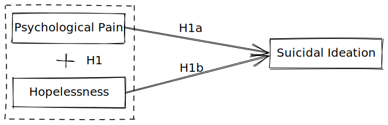

<!DOCTYPE html>
<html lang="en">
  <head>
    <meta charset="utf-8" />
    <meta name="viewport" content="width=device-width, initial-scale=1.0, maximum-scale=1.0, user-scalable=no" />

    <title></title>
    <link rel="stylesheet" href="dist/reveal.css" />
    <link rel="stylesheet" href="dist/theme/serif.css" id="theme" />
    <link rel="stylesheet" href="plugin/highlight/zenburn.css" />
	<link rel="stylesheet" href="css/layout.css" />
	<link rel="stylesheet" href="plugin/customcontrols/style.css">


    <script defer src="dist/fontawesome/all.min.js"></script>

	<script type="text/javascript">
		var forgetPop = true;
		function onPopState(event) {
			if(forgetPop){
				forgetPop = false;
			} else {
				parent.postMessage(event.target.location.href, "app://obsidian.md");
			}
        }
		window.onpopstate = onPopState;
		window.onmessage = event => {
			if(event.data == "reload"){
				window.document.location.reload();
			}
			forgetPop = true;
		}

		function fitElements(){
			const itemsToFit = document.getElementsByClassName('fitText');
			for (const item in itemsToFit) {
				if (Object.hasOwnProperty.call(itemsToFit, item)) {
					var element = itemsToFit[item];
					fitElement(element,1, 1000);
					element.classList.remove('fitText');
				}
			}
		}

		function fitElement(element, start, end){

			let size = (end + start) / 2;
			element.style.fontSize = `${size}px`;

			if(Math.abs(start - end) < 1){
				while(element.scrollHeight > element.offsetHeight){
					size--;
					element.style.fontSize = `${size}px`;
				}
				return;
			}

			if(element.scrollHeight > element.offsetHeight){
				fitElement(element, start, size);
			} else {
				fitElement(element, size, end);
			}		
		}


		document.onreadystatechange = () => {
			fitElements();
			if (document.readyState === 'complete') {
				if (window.location.href.indexOf("?export") != -1){
					parent.postMessage(event.target.location.href, "app://obsidian.md");
				}
				if (window.location.href.indexOf("print-pdf") != -1){
					let stateCheck = setInterval(() => {
						clearInterval(stateCheck);
						window.print();
					}, 250);
				}
			}
	};


        </script>
  </head>
  <body>
    <div class="reveal">
      <div class="slides"><section  data-markdown><script type="text/template"><!-- .slide: class="drop" data-background-image="Image/coverpage.png" -->
<div class="" style="position: absolute; left: 0px; top: 0px; height: 1080px; width: 1920px; min-height: 1080px; display: flex; flex-direction: column; align-items: center; justify-content: center" absolute="true">


</div></script></section><section  data-markdown><script type="text/template"><!-- .slide: class="drop" -->
<div class="" style="position: absolute; left: 0px; top: 0px; height: 1080px; width: 1920px; min-height: 1080px; display: flex; flex-direction: column; align-items: center; justify-content: center" absolute="true">

<video data-autoplay controls width="1500" height="800"><source src="Video/presentationsuicideopening.mp4" type="video/mp4"></video>

```
[1] World Health Organization (2021) 
[2] World Health Organization (2019)
[3] Word Health Organization (2022)
[4] Lew et al. (2021)
[5] Dubé et al. (2021)
[6] Prati & Mancini (2021)
[7] Hassan (2021)
[8] Department of Statistics Malaysia (2022)
```
</div></script></section><section  data-markdown><script type="text/template"><!-- .slide: class="drop" data-background-image="Image/theworldreact.png" -->
<div class="" style="position: absolute; left: 0px; top: 0px; height: 1080px; width: 1920px; min-height: 1080px; display: flex; flex-direction: column; align-items: center; justify-content: center" absolute="true">

<div class="has-light-background" style="background-color: lightblue; position: absolute; left: 0%; top: 0%; height: 20%; width: 100%; display: flex; flex-direction: column; align-items: center; justify-content: center" >

## The World's Reaction
</div>

<br>
<br>

 - Government and authority <!-- .element: class="fragment" data-fragment-index="1" -->
	- Suicide prevention strategies and intervention  <!-- .element: class="fragment" data-fragment-index="2" -->
		- **SDG's Target 3** <!-- .element: class="fragment" data-fragment-index="3" -->
	- Using data to fight suicide <!-- .element: class="fragment" data-fragment-index="4" -->
		- **WHO's 3 Billion Targets** <!-- .element: class="fragment" data-fragment-index="5" -->
		- **12th Malaysian Plan** <!-- .element: class="fragment" data-fragment-index="6" -->
</div></script></section><section  data-markdown><script type="text/template"><!-- .slide: class="drop" -->
<div class="" style="position: absolute; left: 0px; top: 0px; height: 1080px; width: 1920px; min-height: 1080px; display: flex; flex-direction: column; align-items: center; justify-content: center" absolute="true">

## Suicidal Ideation

- It refers to the individuals’ thoughts of suicide (with or without suicidal intention) [3] <!-- .element: class="fragment" data-fragment-index="1" -->
- It is very easy to overlooked suicidal ideation because of suicide attempts [4] <!-- .element: class="fragment" data-fragment-index="2" -->
- More intervention targeted on suicide attempt [4] <!-- .element: class="fragment" data-fragment-index="3" -->
- People who died of suicide without reporting having suicidal ideation in the last month [5] <!-- .element: class="fragment" data-fragment-index="4" -->
	- **Sucidal thoughts are stigmatized [6]** <!-- .element: class="fragment" data-fragment-index="5" -->
- Ideation-to-action framework of suicide [7] <!-- .element: class="fragment" data-fragment-index="6" -->

<br>
<br>

Reference:  
```
[3] Leo et al., 2021   
[4] Jobes & Joiner, 2019   
[5] Berman, 2018  
[6] Richards et al., 2019  
[7] Klonsky & May, 2014
```
</div></script></section><section  data-markdown><script type="text/template"><!-- .slide: class="drop" -->
<div class="" style="position: absolute; left: 0px; top: 0px; height: 1080px; width: 1920px; min-height: 1080px; display: flex; flex-direction: column; align-items: center; justify-content: center" absolute="true">

## 3 Step Theory on Suicidal Ideation

</div></script></section><section  data-markdown><script type="text/template"><!-- .slide: class="drop" -->
<div class="" style="position: absolute; left: 0px; top: 0px; height: 1080px; width: 1920px; min-height: 1080px; display: flex; flex-direction: column; align-items: center; justify-content: center" absolute="true">

## 3 Step Theory on Suicidal Ideation

</div></script></section><section  data-markdown><script type="text/template"><!-- .slide: class="drop" -->
<div class="" style="position: absolute; left: 0px; top: 0px; height: 1080px; width: 1920px; min-height: 1080px; display: flex; flex-direction: column; align-items: center; justify-content: center" absolute="true">

## Theoretical Gap

</div></script></section><section  data-markdown><script type="text/template"><!-- .slide: class="drop" -->
<div class="" style="position: absolute; left: 0px; top: 0px; height: 1080px; width: 1920px; min-height: 1080px; display: flex; flex-direction: column; align-items: center; justify-content: center" absolute="true">

# Dissecting 3 Step Theory using Literature Review (Deductive Approach)
</div></script></section><section  data-markdown><script type="text/template"><!-- .slide: class="drop" -->
<div class="" style="position: absolute; left: 0px; top: 0px; height: 1080px; width: 1920px; min-height: 1080px; display: flex; flex-direction: column; align-items: center; justify-content: center" absolute="true">

## The Relationship between Psychological Pain and Suicidal Ideation

<br>
<br>

<div class="" style="display: flex; flex-direction: column; align-items: center; justify-content: space-evenly" align="justify">

- Shneidman’s Psychache Theory of Suicide [1] 
- When psychological pain become **unbearable**, it *manifest* suicidal ideation
- It is a **better predictor** for suicide than depression [2]
- In **biological view**, suicide is an **escape route** from *intense* psychological pain [3]
</div>

<br>

<div class="has-light-background" style="background-color: pink" >

H1a: Psychological pain is **positively** associated with suicidal ideation
</div>

<br>

References
```
[1] Shneidman (1993)
[2] Montemarano et al. (2018)
[3] Xie et al. (2014)
```
</div></script></section><section  data-markdown><script type="text/template"><!-- .slide: class="drop" -->
<div class="" style="position: absolute; left: 0px; top: 0px; height: 1080px; width: 1920px; min-height: 1080px; display: flex; flex-direction: column; align-items: center; justify-content: center" absolute="true">

## The Relationship between Hopelessness and Suicidal Ideation

<br>
<br>

<div class="" style="display: flex; flex-direction: column; align-items: center; justify-content: space-evenly" align="justify">

- Hopelessness theory of suicide [1]
- Scoring more than 9 points in hopelessness scale will predict suicidal ideation [2][3][4]
- Researcher found significant relationship between hopelessness and suicidal ideation in 357 longitudinal studies [5]
</div>

<br>

<div class="has-light-background" style="background-color: pink" >

H1b: Hopelessness is **positively** associated with suicidal ideation
</div>

References
```
[1] Beck et al. (1975)
[2] McMillan et al. (2007)
[3] Sueki (2022)
[4] Troister et al. (2015)
[5] Ribeiro et al. (2018)
```
</div></script></section><section  data-markdown><script type="text/template"><!-- .slide: class="drop" -->
<div class="" style="position: absolute; left: 0px; top: 0px; height: 1080px; width: 1920px; min-height: 1080px; display: flex; flex-direction: column; align-items: center; justify-content: center" absolute="true">

## The Interation between Psychological Pain, Hopelessless, and Suicidal Ideation

<br>
<br>

- Mutliple studies have found the interaction of psychological pain and hopelessness predicting suicidal ideation [1] [2] [3]
- Tested among clinical sample [4]
- Tested among Asian [3]
- Tested using longitudinal research design [5]

<br>

<div class="has-light-background" style="background-color: pink" >

H1: Psychological pain *interact* with Hopelessness to predict suicidal ideation
</div>

References
```
[1] Dhingra et al. (2019)
[2] Klonsky & May (2015)
[3] Yang et al. (2019)
[4] Tsai et al. (2021)
[5] Pachkowski et al. (2021)
```
</div></script></section><section  data-markdown><script type="text/template"><!-- .slide: class="drop" -->
<div class="" style="position: absolute; left: 0px; top: 0px; height: 1080px; width: 1920px; min-height: 1080px; display: flex; flex-direction: column; align-items: center; justify-content: center" absolute="true">

## Theoretical Framework (Risk Factor only)




```
H1: Psychological pain *interact* with Hopelessness to predict suicidal ideation
	H1a: Psychological pain is positivelyassociated with suicidal ideation
	H1b: Hopelessness is positively associated with suicidal ideation
```
</div></script></section><section  data-markdown><script type="text/template"><!-- .slide: class="drop" -->
<div class="" style="position: absolute; left: 0px; top: 0px; height: 1080px; width: 1920px; min-height: 1080px; display: flex; flex-direction: column; align-items: center; justify-content: center" absolute="true">

## Perceived Belongingness as a Connectedness Protective Factor against Suicidal Ideation

<br>
<br>

- Belongingness is derived from the concept of  “need to belong” [1]
- The Interpersonal Theory of Suicide proposed that thwarted belongingness manifest suicidal ideation [2]
- The presence of belongingness can offer social integration and supports for individuals amid hardship [3]

<br>

<div class="has-light-background" style="background-color: lightblue" >

H2a: Perceived belongingness will moderate the relationship between psychological pain and suicidal ideation 
</div>

References
```
[1] Baumeister and Leary (1995)
[2] Van Orden et al. (2010)
[3] Durkheim (1951)
```
</div></script></section><section  data-markdown><script type="text/template"><!-- .slide: class="drop" -->
<div class="" style="position: absolute; left: 0px; top: 0px; height: 1080px; width: 1920px; min-height: 1080px; display: flex; flex-direction: column; align-items: center; justify-content: center" absolute="true">

### Sociocultural Self-connectedness as a Connectedness Protective Factor against Suicidal Ideation

<br>

- We are looking into the sociocultural pespective because the effect size difference is huge between the eastern [1] and western [2][3] studies investigating the 3 Step Theory.
-  The cultural factor plays a vital role in determining the threshold level for individuals to endure pain [4]
- For example, individualistic population is associated with higher tendency of suidal behaviors [5] [6]
- But individualis-collectivism concept often lead to inconclusive findings [7]
- We turn towards self-construal [8]
- It has 7 factors, but we are only interested on "self-containment and connection to others" [9]

<br>

<div class="has-light-background" style="background-color: lightblue" >

H2b: Self-containment and connection to others moderate the relationship between psychological pain and suicidal ideation  
</div>

References
```
[1] Yang et al. (2019)                 [6] Lester (2003)                    
[2] Klonsky & May (2015)                [7] Eskin et al. (2020)
[3] Dhingra et al. (2019)               [8] Markus & Kitayama (1991)
[4] Eskin et al. (2018)                 [9] Vignoles et al. (2016)
[5] Lenzi et al. (2012)
```
</div></script></section><section  data-markdown><script type="text/template"><!-- .slide: class="drop" -->
<div class="" style="position: absolute; left: 0px; top: 0px; height: 1080px; width: 1920px; min-height: 1080px; display: flex; flex-direction: column; align-items: center; justify-content: center" absolute="true">

## Moral Objection to Suicide as a Connectedness Protective Factor against Suicidal Ideation

<br>
<br>

- Religious connectedness is often operationalized as religious orientation [1]
- Reigious orientation has 2 dimensions **"Intrinsic vs extrinsic"**
- The intrinsic religious orientation **(Not extrinsic)** is negatively associated with suicidal ideation [2]
- Moral and religious objections as one form of intrinsic religious orientation that highly associated with lower suicidal ideation [3]

<br>

<div class="has-light-background" style="background-color: lightblue" >

H2c: Moral Objection to Suicide moderate the relationship between psychological pain and suicidal ideation  
</div>

References
```
[1] Bankier-Karp (2022)
[2] Lew et al. (2018)
[3] Jongkind et al. (2019)
```
</div></script></section><section  data-markdown><script type="text/template"><!-- .slide: class="drop" -->
<div class="" style="position: absolute; left: 0px; top: 0px; height: 1080px; width: 1920px; min-height: 1080px; display: flex; flex-direction: column; align-items: center; justify-content: center" absolute="true">

#### Theoretical Framework (Deductive)


```
H1: Psychological pain interact with Hopelessness to predict suicidal ideation
	H1a: Psychological pain is positively associated with suicidal ideation
	H1b: Hopelessness is positively associated with suicidal ideation
H2: Connectedness (Social connectedness, sociocultural self-connectedness, religious connectedness) moderate the relatioship between psychological pain and suicidal ideation
	H2a: Belongingness will moderate the relationship between psychological pain and suicidal ideation 
	H2b: Self-containment and connection to others moderate the relationship between psychological pain and suicidal ideation 
	H2c: Moral and religious objections to suicide moderate the relationship between psychological pain and suicidal ideation 
```
</div></script></section><section  data-markdown><script type="text/template"><!-- .slide: class="drop" -->
<div class="" style="position: absolute; left: 0px; top: 0px; height: 1080px; width: 1920px; min-height: 1080px; display: flex; flex-direction: column; align-items: center; justify-content: center" absolute="true">

# An Inductive Approach to 3 Step Theory
</div></script></section><section  data-markdown><script type="text/template"><!-- .slide: class="drop" -->
<div class="" style="position: absolute; left: 0px; top: 0px; height: 1080px; width: 1920px; min-height: 1080px; display: flex; flex-direction: column; align-items: center; justify-content: center" absolute="true">

#### Theoretical Framework (Inductive)


```
RQ2: What are the risk factors for suicidal ideation among Malaysian young adults?
	RQ2a: How will pain acts as the risk factor for suicidal ideation?
	RQ2b: How will hopelessness acts as the risk factor for suicidal ideation?
RQ3: How does connectedness act as a protective factor against suicidal ideation among Malaysian young adults?
	RQ3a: How will social connectedness act as a  protective factor against suicidal ideation?
	RQ3b: How will sociocultural self-connectedness act as a protective factor against suicidal ideation?
	RQ3c: How will religious connectedness act as a  protective factor against suicidal ideation?

```
</div></script></section><section  data-markdown><script type="text/template"><!-- .slide: class="drop" -->
<div class="" style="position: absolute; left: 0px; top: 0px; height: 1080px; width: 1920px; min-height: 1080px; display: flex; flex-direction: column; align-items: center; justify-content: center" absolute="true">

<div class="" style="position: absolute; left: 0%; top: 0%; height: 100%; width: 50%; display: flex; flex-direction: column; align-items: center; justify-content: center" >

# Methods
</div>

<div class="has-light-background" style="background-color: pink; position: absolute; left: 50%; top: 0%; height: 100%; width: 50%; display: flex; flex-direction: column; align-items: center; justify-content: center" >

- Research design
- Participants, sampling, and sample size
- Data collection
- Preliminary testings
- Procedure
- Data analysis
</div>
</div></script></section><section  data-markdown><script type="text/template"><!-- .slide: class="drop" -->
<div class="" style="position: absolute; left: 0px; top: 0px; height: 1080px; width: 1920px; min-height: 1080px; display: flex; flex-direction: column; align-items: center; justify-content: center" absolute="true">

## Research Design

<split left= "9" right= "8" gap= "1">


<div class="has-light-background" style="background-color: lightblue" >

- Pragmatism prioritize the **usefulness** of the research tools to acquire the outcome of a phenomenon 
- Mixed methods research uses *quantitative* and *qualitative* approaches to understand the research topic broadly 
- The purpose is to seek **"expansion"** and **diversify of views"** 
- We use the parallel mixed design 
	- Both *quantitative* and *qualitative* part are **equally important**
</split></div>
</div></script></section><section  data-markdown><script type="text/template"><!-- .slide: class="drop" -->
<div class="" style="position: absolute; left: 0px; top: 0px; height: 1080px; width: 1920px; min-height: 1080px; display: flex; flex-direction: column; align-items: center; justify-content: center" absolute="true">

## Participants, Sampling, and Sample Size


<split left= "9" right= "9" gap= "1">
<div class="has-light-background" style="background-color: pink" >

Quantitative  <!-- .element: class="fragment" data-fragment-index="1" -->

<br>

- Young adults <!-- .element: class="fragment" data-fragment-index="1" -->
	-  Excluding people who have mental disorder <!-- .element: class="fragment" data-fragment-index="1" -->
- Convenience sampling <!-- .element: class="fragment" data-fragment-index="1" -->
	- Lack of sampling frame <!-- .element: class="fragment" data-fragment-index="1" -->
	- Prioritize theoretical generalization <!-- .element: class="fragment" data-fragment-index="1" -->
- Minimum sample size is 394 participants <!-- .element: class="fragment" data-fragment-index="1" -->
	- We collect the parameters from previous studies <!-- .element: class="fragment" data-fragment-index="1" -->
		- G*Power  <!-- .element: class="fragment" data-fragment-index="1" -->
		- Monte Carlo simulation <!-- .element: class="fragment" data-fragment-index="1" -->

</div>
<div class="has-light-background" style="background-color: lightblue" >

Qualitative <!-- .element: class="fragment" data-fragment-index="2" -->

<br>

- Main: Young adults <!-- .element: class="fragment" data-fragment-index="2" -->
	- With and without suicidal ideation
- Side: Experts (Suicide, racial or religious) <!-- .element: class="fragment" data-fragment-index="2" -->
- Purposive sampling <!-- .element: class="fragment" data-fragment-index="2" -->
- Snowball sampling <!-- .element: class="fragment" data-fragment-index="2" -->
- We will revised the sample size based on the data collected <!-- .element: class="fragment" data-fragment-index="2" -->
	- We will stop the recruitment once data is saturated
</split></div>
</div></script></section><section  data-markdown><script type="text/template"><!-- .slide: class="drop" -->
<div class="" style="position: absolute; left: 0px; top: 0px; height: 1080px; width: 1920px; min-height: 1080px; display: flex; flex-direction: column; align-items: center; justify-content: center" absolute="true">

## Data Collection (Quantitative)

<br>

| Construct         | Scales                             | Factor                                                | Item | Reliability |
| ----------------- | ---------------------------------- | ----------------------------------------------------- | ---- | ----------- |
| Suicidal ideation | Yatt Suicide Attitude Scale (YSAS) | 2 factors (**Suicidal ideation** and suicide attempt) | 5    | 0.83        |
| Psycological pain | Psychache Scale                    | Unidimensional                                        | 13   | 0.90        |
| Hopelessness      | Beck Hopelessness Scale (BHS-SF)   | Unidimensional                                        | 4    | 0.81        |
|                   |                                    |                                                       |      |             |
</div></script></section><section  data-markdown><script type="text/template"><!-- .slide: class="drop" -->
<div class="" style="position: absolute; left: 0px; top: 0px; height: 1080px; width: 1920px; min-height: 1080px; display: flex; flex-direction: column; align-items: center; justify-content: center" absolute="true">

| Construct                        | Scales                                  | Factor                                                                                                                                                                                                                                            | Item | Reliability              |
| -------------------------------- | --------------------------------------- | ------------------------------------------------------------------------------------------------------------------------------------------------------------------------------------------------------------------------------------------------- | ---- | ------------------------ |
| Social-connectedness             | Interpersonal Needs Questionnaire (INQ) | 2 factors (**perceived belongingness** and burdensomeness)                                                                                                                                                                                        | 5    | 0.83                     |
| Sociocultural self-connectedness | Self-construal Scale                    | 7 factors (Difference vs. Similarity, **Self-containment vs. Connection to others**,  Self-direction vs. Receptiveness to influence, Self-reliance vs. Dependence on others, Consistency vs. Variability, Self-interest vs. Commitment to others) | 6    | Good universal model fit |
| Religion connectedness           | The Reasons for Living Inventory        | 6 factors (Survival and Coping Beliefs, Responsibility to Family, Child-Related Concerns, Fear of Suicide, Fear of Social Disapproval, **Moral Objections to suicide**)                                                                           | 4    | 0.84                     |
|                                  |                                         |                                                                                                                                                                                                                                                   |      |                          |
</div></script></section><section  data-markdown><script type="text/template"><!-- .slide: class="drop" -->
<div class="" style="position: absolute; left: 0px; top: 0px; height: 1080px; width: 1920px; min-height: 1080px; display: flex; flex-direction: column; align-items: center; justify-content: center" absolute="true">

| Construct                                           | Scales                                  | Factor                                                     | Item            | Reliability |     |
| --------------------------------------------------- | --------------------------------------- | ---------------------------------------------------------- | --------------- | ----------- | --- |
| Perceived burdensomeness and thwarted belongingness | Interpersonal Needs Questionnaire (INQ) | 2 factors (perceived belongingness and burdensomeness)     | 10 (5 repeated) | 0.80        |     |
| Internal entrapment                                 | Entrapment Scale                        | 2 factors (**Internal entrapment** vs External entrapment) | 6               | 0.87        |     |
| Social desirability                                 | Marlowe-Crowne Social Desirability      | Unidimensional                                             | 5               | 0..66       |     |
|                                                     |                                         |                                                            |                 |             |     |
</div></script></section><section  data-markdown><script type="text/template"><!-- .slide: class="drop" -->
<div class="" style="position: absolute; left: 0px; top: 0px; height: 1080px; width: 1920px; min-height: 1080px; display: flex; flex-direction: column; align-items: center; justify-content: center" absolute="true">

## Data Collection (Qualitative)

<br>

- In depth interview
	- Vignette-based semi-structured interview (Session 1)
	- Unstructured interview (Session 2
</div></script></section><section  data-markdown><script type="text/template"><!-- .slide: class="drop" -->
<div class="" style="position: absolute; left: 0px; top: 0px; height: 1080px; width: 1920px; min-height: 1080px; display: flex; flex-direction: column; align-items: center; justify-content: center" absolute="true">

## Preliminary testing (Quantitative)

<br>

<div class="has-light-background" style="background-color: lightblue" >

- Check for content validity
	- content validity index
	- 3 experts in pyschology, social sciences, or psychrometics
- Check for face validity
	- cognitive interviewing
- Launch a pilot study
	- 85 participants
	- Checks for reliability and validity statitical coefficient
	- Monte Carlo simulation
</div>
</div></script></section><section  data-markdown><script type="text/template"><!-- .slide: class="drop" -->
<div class="" style="position: absolute; left: 0px; top: 0px; height: 1080px; width: 1920px; min-height: 1080px; display: flex; flex-direction: column; align-items: center; justify-content: center" absolute="true">

## Procedure

<br>

<div class="has-light-background" style="background-color: pink" >

- Apply for institutional ethics approval
- Register research protocol in Open Science Framework
- Launch the preliminary tests
- Launch the recruitment poster, information, and survey online (Facebook, WhatsApp, and LinkedIn )
- For qualitative study, we will immediately transcibe and analyze every data after one interview to evaluate the saturation of the data
- We will end the recruitment once we fulfilled the sample size criteria
</div>
</div></script></section><section  data-markdown><script type="text/template"><!-- .slide: class="drop" -->
<grid absolute="true" drag="100 100" drop="0 0">
<div class="has-light-background flex-even" style="background-color: lightblue; position: absolute; left: 5%; top: 0%; height: 100%; width: 90%; display: flex; flex-direction: row; align-items: center; justify-content: center" >

## Data analysis

<div class="has-light-background" style="background-color: pink" ```
 drag="90 60">

Quantitative  <!-- .element: class="fragment" data-fragment-index="1" -->

<br>

- Explanation <!-- .element: class="fragment" data-fragment-index="1" -->
	- Identify the association of each relationships 
	- Structural equation modeling
	- Universal model fit test (Chi Square statistics, RMSEA, CFi, TLI, etc)
- Prediction <!-- .element: class="fragment" data-fragment-index="1" -->
	- Testing the practicability of the theory 
	- Machine learning 
	- Random forest
		- Identify interaction
		- Cross-validation

</div>
<div class="has-light-background" style="background-color: lightblue" drag="90 60">

Qualitative <!-- .element: class="fragment" data-fragment-index="2" -->

<br>

- Reflexive thematic analysis <!-- .element: class="fragment" data-fragment-index="2" -->
	- Researcher take an active role in interpreting the data
	- Researcher use prior theory to make sense of the data
</div>
</div></script></section><section  data-markdown><script type="text/template"><!-- .slide: class="drop" data-background-image="Image/Thank you.png" -->
<div class="" style="position: absolute; left: 0px; top: 0px; height: 1080px; width: 1920px; min-height: 1080px; display: flex; flex-direction: column; align-items: center; justify-content: center" absolute="true">


</div></script></section></div>
    </div>

    <script src="dist/reveal.js"></script>

    <script src="plugin/markdown/markdown.js"></script>
    <script src="plugin/highlight/highlight.js"></script>
    <script src="plugin/zoom/zoom.js"></script>
    <script src="plugin/notes/notes.js"></script>
    <script src="plugin/math/math.js"></script>
	<script src="plugin/mermaid/mermaid.js"></script>
	<script src="plugin/chart/chart.min.js"></script>
	<script src="plugin/chart/plugin.js"></script>
	<script src="plugin/customcontrols/plugin.js"></script>

    <script>
      function extend() {
        var target = {};
        for (var i = 0; i < arguments.length; i++) {
          var source = arguments[i];
          for (var key in source) {
            if (source.hasOwnProperty(key)) {
              target[key] = source[key];
            }
          }
        }
        return target;
      }

	  function isLight(color) {
		let hex = color.replace('#', '');

		// convert #fff => #ffffff
		if(hex.length == 3){
			hex = `${hex[0]}${hex[0]}${hex[1]}${hex[1]}${hex[2]}${hex[2]}`;
		}

		const c_r = parseInt(hex.substr(0, 2), 16);
		const c_g = parseInt(hex.substr(2, 2), 16);
		const c_b = parseInt(hex.substr(4, 2), 16);
		const brightness = ((c_r * 299) + (c_g * 587) + (c_b * 114)) / 1000;
		return brightness > 155;
	}

	var bgColor = getComputedStyle(document.documentElement).getPropertyValue('--r-background-color').trim();
	var isLight = isLight(bgColor);

	if(isLight){
		document.body.classList.add('has-light-background');
	} else {
		document.body.classList.add('has-dark-background');
	}

      // default options to init reveal.js
      var defaultOptions = {
        controls: true,
        progress: true,
        history: true,
        center: true,
        transition: 'default', // none/fade/slide/convex/concave/zoom
        plugins: [
          RevealMarkdown,
          RevealHighlight,
          RevealZoom,
          RevealNotes,
          RevealMath.MathJax3,
		  RevealMermaid,
		  RevealChart,
		  RevealCustomControls,
        ],


    	allottedTime: 120 * 1000,

		mathjax3: {
			mathjax: 'plugin/math/mathjax/tex-mml-chtml.js',
		},
		markdown: {
		  gfm: true,
		  mangle: true,
		  pedantic: false,
		  smartLists: false,
		  smartypants: false,
		},

		mermaid: {
			theme: isLight ? 'default' : 'dark',
		},

		customcontrols: {
			controls: [
			]
		},
      };

      // options from URL query string
      var queryOptions = Reveal().getQueryHash() || {};

      var options = extend(defaultOptions, {"width":1920,"height":1080,"margin":0.04,"controls":true,"progress":true,"slideNumber":true,"transition":"slide","transitionSpeed":"default"}, queryOptions);
    </script>

    <script>
      Reveal.initialize(options);
    </script>
  </body>

  <!-- created with Advanced Slides -->
</html>
